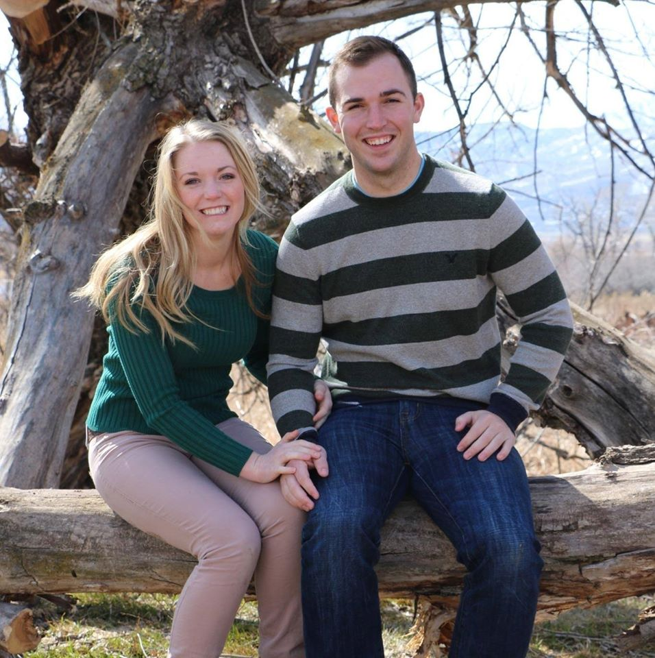

Introduction
My name is Matt Layton and I am from Kaysville, UT. I am a Web Design and Development major with an emphasis in Development. This is my second to last semester before I graduate (This semester being the last semester of classes and the next for an internship which I am still looking for). I decided last year to switch from majoring in the Professional Pilot degree at Utah State University to Web Development and have loved every minute of this new change. I am hoping to find a job as a Web Developer or similar here in the Salt Lake area. I have taken courses that have included languages such as Java, PHP, JavaScript, HTML and CSS along with the database class which included Oracle and MySQL. Also, I have taken a course in Graphic Design, Web Business and Visual Media. I am very excited for this class and hope to gain experience that will benefit me greatly in the Web Development field.
For the past three semesters I have been taking classes on campus, but decided to take this semester online so I can work and because I will be getting married in July. I am a little nervous for this new transition into online classes, but also excited for the new experience.
My hobbies include movies, mountain biking, snowboarding and swimming. In the summers I work at a landscaping company and in the winters I work as a snowboard instructor at Snowbasin Ski Resort. I have also done volunteer work as a Web Developer for the Idaho Association for Marriage and Family Therapists.